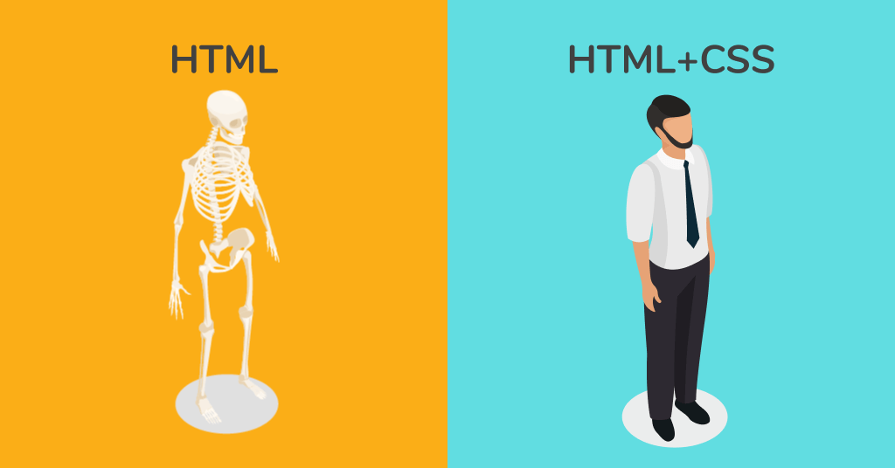

Este sitio servirá de guía para poder aprender y comprender lo relacionado a los Fundamentos del lenguaje HTML y CSS.
Enfocandonos en esta sección en el comprendimiento del Framework CSS.
Antes de que el uso de etiquetas CSS fueran mas generalizado, el lenguaje que se empleaba para modificar el diseño de las paginas web era HTML; el inconveniente venia en que si deseabas emplear este lenguaje, tendrias que aplicar el diseño que desearas a cada termino individualmente, ocasionando que, si por ejemplo, estuvieras usando la etiqueta de "-font-" tendrias que introducir cada atributo en cada termino que quisieras quisieras que tuviera este diseño, si la página tuviera 100 elementos, tendrias que introducir 100 etiquetas, y como cada una tiene 3 atributos, serian un total de 300 atributos aplicados.
En cambio si se usa etiquetas CSS podemos separar el diseño y apariencia de la página de su contenido, permitiendonos por ejemplo asignar un respectivo Estilo de fuente para ciertos tipos de etiquetas, en vez de ingresarlas o asignarlas individualmente, como por ejemplo si ingresamos esto:
Estaremos asignando que toda la información que ingresemos usando la etiqueta "-h1-" sea de color azul, con una fuente Arial y con un tamaño asignado en Grande mientras que las etiquetas "-t-" seran de color negro, con la fuente en Times New Roman y de tamaño medio, todo asignado en una seccion aparte asignada como "-style".
De todas formas, si quisieras que los atributos sean los mismos para todas las paginas que estas creando, tendrias que copiar estas reglas y pegarlas en cada página, pero eso no quitara el hecho de que nos habra hecho ahorrar una considerable cantidad de lineas.